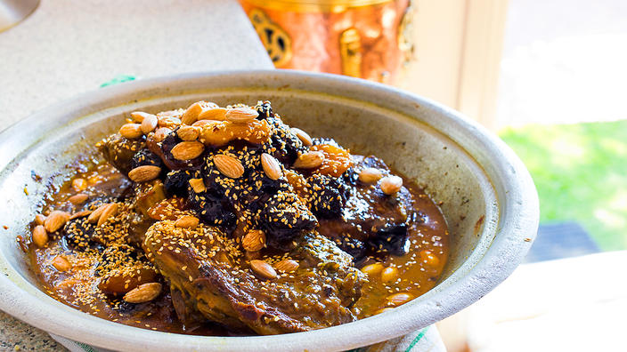

Lamb Tagine With Prunes

Description
Beef or lamb with prunes is a classic sweet and savory Moroccan dish that combines dried prunes and meat with the fragrant spices of ginger, saffron, cinnamon, and pepper. It's popular as a traditional offering at holiday gatherings, weddings, and other special occasions.
Of course, no special occasion is needed in order for a tagine of lamb with prunes to appear on the table. Prep work is minimal, making it a perfect choice for casual family meals. Although the use of a Moroccan clay or ceramic tagine is most traditional, most Moroccan cooks prepare this dish in a pressure cooker as it speeds things up. Tender cuts of meat (some pieces on the bone) will give the best results.
Ingredients
- 2 level tsp each coriander seeds, cumin seeds and chilli powder
- 1 level tbsp each paprika and ground turmeric
- 5 garlic cloves, chopped
- 6 tbsp. olive oil
- 1 kg (3lb) lamb leg steaks
- 75 g (3oz) ghee or clarified butter (see tip)
- 2 large onions, finely chopped
- 1 carrot, roughly chopped
- 900 ml (11⁄2 pints) lamb stock
- 300 g (11oz) ready-to-eat prunes
- 4 each cinnamon sticks and bay leaves
- 50 g (2oz) ground almonds
- Salt and freshly ground black pepper
- 12 shallots
- 1 tbsp. honey
- Toasted almonds and chopped flat-leafed parsley to garnish
Steps
- Blend together the coriander, cumin, chilli powder, paprika, turmeric, garlic and 4tbsp oil in a pestle and mortar or a blender. Coat the steaks with the paste and cover and chill for at least 5hr or overnight.
- In a large flameproof casserole, melt 25g (1oz) ghee, add the onions and carrot and cook until soft, then remove and put to one side. Fry the lamb on each side in the rest of the ghee.
- Add a little of the stock to the casserole and bring to the boil, scraping up the sediment from the bottom. Return the onion and carrot to the casserole and add 100g (31⁄2oz) of the prunes.
- Add the remaining stock to the pan with the cinnamon sticks, bay leaves and ground almonds; season. Cover and cook at 170°C (325°F) mark 3 for 2hr or until the meat is really tender.
- Meanwhile, fry the shallots in the rest of the olive oil and the honey until they turn a deep golden brown. Add to the casserole 30-40min before the end of the cooking time.
- Take the lamb out of the sauce and put to one side. Bring the sauce to the boil, bubble and reduce to a thick consistency. Return the lamb to the casserole, add the remaining prunes, then bubble for 3-4min. Garnish with almonds and flat-leafed parsley.